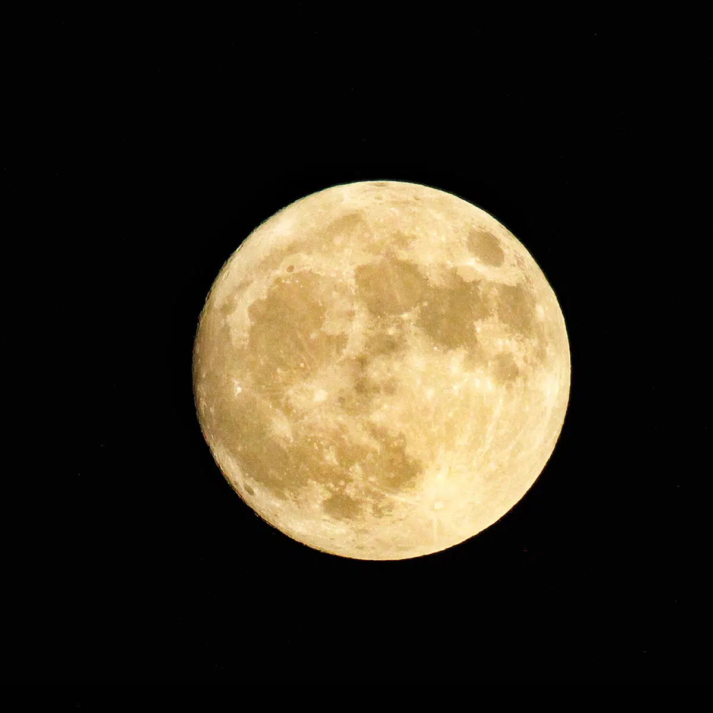
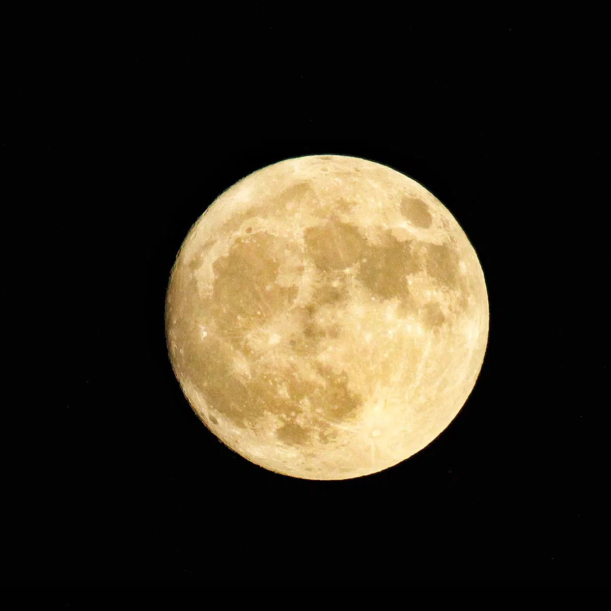

Mankind’s arrival on the only natural satellite available to the planet Earth took place, as mentioned above, on 20 July 1969.
On that day, two of the Apollo 11 crew members, Neil Armstrong and Edwin “Buzz” Aldrin were, in that order, the first people to walk on the Moon. The third of the crew, Michael Collins, remained in orbit in the spacecraft, which is why he has even gone down in history as the “forgotten astronaut”.
And if there is any idea or image that evokes the moon landing, it would undoubtedly be Armstrong’s phrase (“One small step for man, one giant leap for mankind”) or Aldrin’s footprint stamped on the lunar surface.
This NASA mission was a turning point in the struggle between the United States and the Soviet Union in the space race, since the Eurasian country had already achieved numerous milestones such as the launch of the first living being into space (the dog Laika in 1957), the first human in space (Yuri Gagarin in 1961), the first woman in space (Valentina Tereshkova, in 1963) or the first space walk (led by Aleksei Leonov in 1965).
 


The mission's objective is to achieve a soft landing on the Moon and deploy the rover to conduct in-situ scientific experiments, including analyzing the lunar soil and searching for water ice.
India's future plans and mission objectives for lunar day and projects to the Moon include: